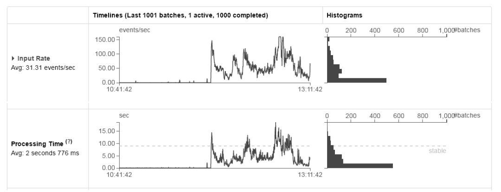
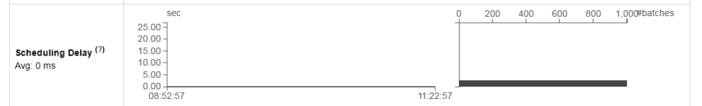

在使用 Spark 和 Spark Streaming 时，当我们将应用部署在集群上时，可能会碰到运行慢、占用过多资源、不稳定等问题，这时需要做一些优化才能达到最好的性能。有时候一个简单的优化可以起到化腐朽为神奇的作用，使得程序能够更加有效率，也更加节省资源。本文我们就来介绍一些能够提高应用性能的参数和配置。
另外需要指出的是，优化本身是一个具体性很强的事情，不同的应用及落地场景会有不同的优化方式，并没有一个统一的优化标准。本文我们简单聊聊一些在项目中踩过的“坑”，列举以下常见的优化方式。
数据序列化
在分布式应用中，序列化（serialization）对性能的影响是显著的。如果使用一种对象序列化慢、占用字节多的序列化格式，就会严重降低计算效率。通常在 Spark 中，主要有如下3个方面涉及序列化：
① 在算子函数中使用到外部变量时，该变量会被序列化后进行网络传输。
② 将自定义的类型作为 RDD 的泛型类型时，所有自定义类型对象都会进行序列化。因此这种情况下，也要求自定义的类必须实现 Serializable 接口。
③ 使用可序列化的持久化策略时（比如 MEMORY_ONLY_SER），Spark 会将 RDD 中的每个 partition 都序列化成一个大的字节数组。
而 Spark 综合考量易用性和性能，提供了下面两种序列化库。
① Java 序列化：默认情况下，Spark 使用 Java 的对象输出流框架（ObjectOutputStream framework）来进行对象的序列化，并且可用在任意实现 Java.io.Serializable 接口的自定义类上。我们可以通过扩展 Java.io.Externalizable 来更加精细地控制序列化行为。Java 序列化方式非常灵活，但是通常序列化速度非常慢而且对于很多类会产生非常巨大的序列化结果。
② Kryo 序列化：Spark 在2.0.0以上的版本可以使用 Kryo 库来非常快速地进行对象序列化，Kryo 要比 Java 序列化更快、更紧凑（10倍），但是其不支持所有的 Serializable 类型，并且在使用自定义类之前必须先注册。
我们可以在初始化 SparkConf 时，调用 conf.set(＂spark.serializer＂,＂org.apache.spark. serializer.KryoSerializer＂)来使用 Kryo。一旦进行了这个配置，Kryo 序列化不仅仅会用在 Shuffling 操作时 worker 节点间的数据传递，也会用在 RDDs 序列化到硬盘的过程。
Spark 官方解释没有将 Kryo 作为默认序列化方式的唯一原因是，Kryo 必须用户自己注册（注意如果我们不注册自定义类，Kryo 也是可以正常运行的，但是它必须存储每个对象的完整类名，这是非常浪费的），但是其推荐在网络频繁传输的应用中使用 Kryo。
另外值得注意的是，在 Spark 2.0.0 之后，Spark 已经默认将 Kryo 序列化作为简单类型（基本类型、基本类型的数组及 string 类型）RDD 进行 Shuffling 操作时传输数据的对象序列化方式。
Spark 已经自动包含注册了绝大部分 Scala 的核心类，如果需要向 Kryo 注册自己的类别，可以使用 registerKryoClasses 方法。使用 Kryo 的代码框架如下：
1 | // Spark配置项 |
如果我们的对象非常大，可能需要增加 Spark.kryoserializer.buffer 的配置。
同样在 Spark Streaming 中，通过优化序列化格式可以缩减数据序列化的开销，而在 Streaming 中还会涉及以下两类数据的序列化。
输入数据：Spark Streaming 中不同于 RDD 默认是以非序列化的形式存于内存当中，Streaming 中由接收器（Receiver）接收而来的数据，默认是以序列化重复形式（StorageLevel.MEMORY_AND_DISK_SER_2）存放于 Executor 的内存当中。而采用这种方式的目的，一方面是由于将输入数据序列化为字节流可以减少垃圾回收（GC）的开销，另一方面对数据的重复可以对 Executor 节点的失败有更好的容错性。同时需要注意的是，输入数据流一开始是保存在内存当中，当内存不足以存放流式计算依赖的输入数据时，会自动存放于硬盘当中。而在 Streaming 中这部分序列化是一个很大的开销，接收器必须先反序列化（deserialize）接收到的数据，然后再序列化（serialize）为 Spark 本身的序列化格式。
由 Streaming 操作产生 RDD 的持久化：由流式计算产生的 RDDs 有可能持久化在内存当中，例如由于基于窗口操作的数据会被反复使用，所以会持久化在内存当中。值得注意的是，不同于 Spark 核心默认使用非序列化的持久化方式（StorageLevel. MEMORY_ONLY），流式计算为了减少垃圾回收（GC）的开销，默认使用了序列化的持久化方式（StorageLevel.MEMORY_ONLY_SER）。
不管在 Spark 还是在 Spark Streaming 中，使用 Kryo 序列化方式，都可以减少 CPU 和内存的开销。而对于流式计算，如果数据量不是很大，并且不会造成过大的垃圾回收（GC）开销，我们可以考虑利用非序列化对象进行持久化。
例如，我们使用很小的批处理时间间隔，并且没有基于窗口的操作，可以通过显示设置相应的存储级别来关闭持久化数据时的序列化，这样可以减少序列化引起的 CPU 开销，但是潜在的增加了 GC 的开销。
广播大变量
我们知道，不论 Spark 还是 Spark Streaming 的应用，在集群节点间进行数据传输时，都会有序列化和反序列化的开销，而如果我们的应用有非常大的对象时，这部分开销是巨大的。比如应用中的任何子任务需要使用 Driver 节点的一个大型配置查询表，这时就可以考虑将该表通过共享变量的方式，广播到每一个子节点，从而大大减少在传输和序列化上的开销。
另外，Spark 在 Master 节点会打印每个任务的序列化对象大小，我们可以通过观察任务的大小，考虑是否需要广播某些大变量。通常一个任务的大小超过 20KB，是值得去优化的。
当我们将大型的配置查询表广播出去时，每个节点可以读取配置项进行任务计算，那么假设配置发生了动态改变时，如何通知各个子节点配置表更改了呢？（尤其是对于流式计算的任务，重启服务代价还是蛮大的。）
我们知道广播变量是只读的，也就是说广播出去的变量没法再修改，那么应该怎么解决这个问题呢？我们可以利用 Spark 中的 unpersist() 函数，Spark 通常会按照 LRU（least Recently Used）即最近最久未使用原则对老数据进行删除，我们并不需要操作具体的数据，但如果是手动删除，可以使用 unpersist() 函数。
所以这里更新广播变量的方式是，利用 unpersist() 函数先将已经发布的广播变量删除，然后修改数据后重新进行广播，我们通过一个广播包装类来实现这个功能，代码如下：
1 | import java.io.{ ObjectInputStream, ObjectOutputStream } |
利用 wrapper 更新广播变量，可以动态地更新大型的配置项变量，而不用重新启动计算服务，大致的处理逻辑如下：
1 | // 定义 |
数据处理和接收时的并行度
作为分布式系统，增加接收和处理数据的并行度是提高整个系统性能的关键，也能够充分发挥集群机器资源。
关于 partition 和 parallelism。partition 指的就是数据分片的数量，每一次 Task 只能处理一个 partition 的数据，这个值太小了会导致每片数据量太大，导致内存压力，或者诸多 Executor 的计算能力无法充分利用；但是如果 partition 太大了则会导致分片太多，执行效率降低。
在执行 Action 类型操作的时候（比如各种 reduce 操作），partition 的数量会选择 parent RDD 中最大的那一个。而 parallelism 则指的是在 RDD 进行 reduce 类操作的时候，默认返回数据的 paritition 数量（而在进行 map 类操作的时候，partition 数量通常取自 parent RDD 中较大的一个，而且也不会涉及 Shuffle，因此这个 parallelism 的参数没有影响）。
由上述可得，partition 和 parallelism 这两个概念密切相关，都是涉及数据分片，作用方式其实是统一的。通过 Spark.default.parallelism 可以设置默认的分片数量，而很多 RDD 的操作都可以指定一个 partition 参数来显式控制具体的分片数量，如 reduceByKey和reduceByKeyAndWindow。
Spark Streaming 接收 Kafka 数据的方式，这个过程有一个数据反序列化并存储到 Spark 的开销，如果数据接收成为了整个系统的瓶颈，那么可以考虑增加数据接收的并行度。每个输入 DStream 会创建一个单一的接收器（receiver 在 worker 节点运行）用来接收一个单一的数据流。而对于接收多重数据的情况，可以创建多个输入 DStream 用来接收源数据流的不同分支（partitions）。
如果我们利用 Receiver 的形式接收 Kafka，一个单一的 Kafka 输入 DStream 接收了两个不同 topic 的数据流，我们为了提高并行度可以创建两个输入流，分别接收其中一个 topic 上的数据。这样就可以创建两个接收器来并行地接收数据，从而提高整体的吞吐量。而之后对于多个 DStreams，可以通过 union 操作并为一个 DStream，之后便可以在这个统一的输入 DStream 上进行操作，代码示例如下：
1 | val numStreams = 5 |
如果采用 Direct 连接方式，前面讲过 Spark 中的 partition 和 Kafka 中的 partition 是一一对应的，但一般默认设置为 Kafka 中 partition 的数量，这样来达到足够并行度以接收 Kafka 数据。
设置合理的批处理间隔
对于一个 Spark Streaming 应用，只有系统处理数据的速度能够赶上数据接收的速度，整个系统才能保持稳定，否则就会造成数据积压。换句话说，即每个 batch 的数据一旦生成就需要被尽快处理完毕。这一点我们可以通过 Spark 监控界面进行查看（在2.3.4节我们介绍过），比较批处理时间必须小于批处理间隔。
通过设置合理的批处理大小（batch size），使得每批数据能够在接收后被尽快地处理完成（即数据处理的速度赶上数据生成的速度）。
如何选取合适的批处理时间呢？一个好的方法是：先保守地设置一个较大的批处理间隔（如 5～10s），以及一个很低的数据速率，来观测系统是否能够赶上数据传输速率。我们可以通过查看每个处理好的 batch 的端到端延迟来观察，也可以看全局延迟来观察（可以在 Spark log4j 的日志里或者使用 StreamingListener 接口，也可以直接在 UI 界面查看）。
如果延迟保持在一个相对稳定的状态，则整个系统是稳定的，否则延迟不断上升，那说明整个系统是不稳定的。在实际场景中，也可以直接观察系统正在运行的 Spark 监控界面来判断系统的稳定性。
内存优化是在所有应用落地中必须经历的话题，虽然 Spark 在内存方面已经为开发者做了很多优化和默认设置，但是我们还是需要针对具体的情况进行调试。
在优化内存的过程中需要从3个方面考虑这个问题：对象本身需要的内存；访问这些对象的内存开销；垃圾回收（GC garbage collection）导致的开销。
通常来说，对于 Java 对象而言，有很快的访问速度，但是很容易消耗原始数据2～5倍以上的内存空间，可以归结为以下几点原因：
① 每个独立的 Java 对象，都会有一个“对象头”，大约16个字节用来保存一些基本信息，如指向类的指针，对于一个只包含很少数据量在内的对象（如一个 Int 类型数据），这个开销是相对巨大的。
② Java 的 String 对象会在原始数据的基础上额外开销40个字节，因为除了字符数组（Chars array）本身之外，还需要保存如字符串长度等额外信息，而且由于 String 内部存储字符时是按照 UTF-16 格式编码的，所以一个10字符的字符串开销很容易超过60个字符。
③ 对于集合类（collection classes），如 HashMap、LinkedList，通常使用链表的形式将数据结构链在一起，那么对于每一个节点（entry，如Map.Entry）都会有一个包装器（wrapper），而这个包装器对象不仅包含对象头，还会保存指向下一个节点的指针（每个8字节）。
④ 熟悉 Java 的开发者应该知道，Java 数据类型分为基本类型和包装类型，对于 int、long 等基本类型是直接在栈中分配空间，如果我们想将这些类型用在集合类中（如Map<String, Integer>），需要使用对基本数据类型打包（当然这是 Java 的一个自动过程），而打包后的基本数据类型就会产生额外的开销。
针对以上内存优化的基本问题，接下来首先介绍 Spark 中如何管理内存，之后介绍一些能够在具体应用中更加有效地使用内存的具体策略，例如，如何确定合适的内存级别，如何改变数据结构或将数据存储为序列化格式来节省内存等，也会从 Spark 的缓存及 Java 的垃圾回收方面进行分析，另外，也会对 Spark Streaming 进行分析。
1. 内存管理
Spark 对于内存的使用主要有两类用途：执行（execution）和存储（storage）。执行类内存主要被用于 Shuffle 类操作、join 操作及排序（sort）和聚合（aggregation）类操作，而存储类内存主要用于缓存数据（caching）和集群间内部数据的传送。
在 Spark 内部执行和存储分享同一片内存空间（M），当没有执行类内存被使用时，存储类内存可以使用全部的内存空间，反之亦然。执行类内存可以剥夺存储类内存的空间，但是有一个前提是，存储类内存所占空间不得低于某一个阈值 R，也就是说R指定了 M 中的一块子空间块是永远不会被剥夺的。而另一方面由于实现上的复杂性，存储类内存是不可以剥夺执行类内存的。
Spark 的这种设计方式确保了系统一些很好的特性：首先，如果应用不需要缓存数据，那么所有的空间都可以用作执行类内存，可以一定程度上避免不必要的内存不够用时溢出到硬盘的情况；其次，如果应用需要使用缓存数据，会有最小的内存空间R能够保证这部分数据块免于被剥夺；最后，这种方式对于使用者而言是完全黑盒的，使用者不需要了解内部如何根据不同的任务负载来进行内存划分。
Spark 提供了两个相关的配置，但是大多数情况下直接使用默认值就能满足大部分负载情况：
Spark Memory.Fraction 表示 M 的大小占整个 JVM（Java Virtue Machine）堆空间的比例（默认是0.6），剩余的空间（40%）被用来保存用户的数据结构及 Spark 内部的元数据（metadata），另一方面预防某些异常数据记录造成的 OOM（Out of Memory）错误。
Spark.Memory.StorageFraction 表示 R 的大小占整个 M 的比例（默认是0.5），R 是存储类内存在 M 中占用的空间，其中缓存的数据块不会被执行类内存剥夺。
2. 优化策略
当我们需要初步判断内存的占用情况时，可以创建一个 RDD，然后将其缓存（cache）起来，然后观察网页监控页面的存储页部分，就可以看出 RDD 占用了多少内存。而对于特殊的对象，我们可以调用 SizeEstimator 的 estimate() 方法来评估内存消耗，这对于实验不同数据层的内存消耗，以及判断广播变量在每个 Executor 堆上所占用的内存是非常有效的。
当我们了解了内存的消耗情况后，发现占用内存过大，可以着手做一些优化，一方面可以在数据结构方面进行优化。首先需要注意的是，我们要避免本章开头提到的 Java 本身数据结构的头部开销，比如基于指针的数据结构或者包装器类型，有以下方式可以进行优化：
在设计数据结构时，优先使用基本数据类型及对象数组等，避免使用 Java 或者 Scala 标准库当中的集合类（如 HashMap），在 fastutil 库中，为基本数据类型提供了方便的集合类接口，这些接口也兼容 Java 标准库。
尽可能避免在数据结构中嵌套大量的小对象和指针。
考虑使用数值类 ID 或者枚举对象来代替字符串类型作为主键（Key）。
如果我们的运行时内存小于 32GB，可以加上 JVM 配置-XX:+UseCompressedOops 将指针的占用空间由8个字节压缩到4个字节，我们也可以在 Spark-env.sh 中进行配置。
假设我们通过以上策略还是发现对象占用了过大的内存，可以用一个非常简单的方式来降低内存使用，就是将对象以序列化的形式（serialized form）存储，在 RDD 的持久化接口中使用序列化的存储级别，如 MEMORY_ONLY_SER，Spark 便会将每个 RDD 分区存储为一个很大的字节数组。而这种方式会使得访问数据的速度有所下降，因为每个对象访问时都需要有一个反序列化的过程。在7.1节中我们已经介绍过，优先使用 Kryo 序列化方式，其占用大小远低于 Java 本身的序列化方式。
3. 垃圾回收（GC）优化
如果我们在应用中进行了频繁的 RDD 变动，那么 JVM 的垃圾回收会成为一个问题（也就是说，假设在程序中只创建了一个 RDD，后续所有操作都围绕这个 RDD，那么垃圾回收就不存在问题）。当 Java 需要通过删除旧对象来为新对象开辟空间时，它便会扫描我们曾创建的所有对象并找到不再使用的对象。
所以垃圾回收的开销是和 Java 对象的个数成比例的，我们要尽可能地使用包含较少对象的数据结构（如使用 Int 数组代替 LinkedList）来降低这部分开销。另外前面提到的用序列化形式存储也是一个很好的方法，序列化后每个对象在每个 RDD 分区下仅有一个对象（一个字节数组）。注意当 GC 开销成为瓶颈时，首先要尝试的便是序列化缓存（serialized caching）。
在做 GC 优化时，我们首先需要了解 GC 发生的频率以及其所消耗的时间。这可以通过在 Java 选项中加入 -verbose:gc -XX:+PrintGCDetails -XX:+PrintGCTimeStamps 来实现；之后当 Spark 任务运行后，便可以在 Worker 日志中看到 GC 发生时打印的信息。注意这些日志是打印在集群中的 Worker 节点上的（在工作目录的 stdout 文件中），而非 Driver 程序。
为了进一步优化 GC，首先简单介绍下 Java 虚拟机内部是如何进行内存管理的。
① Java 对象是存储在堆空间内的，堆空间被分为两部分，即年轻区域（Young region）和老年区域（Old region），其中年轻代（Young generation）会用来存储短生命周期的对象，而老年代（Old generation）会用来存储较长生命周期的对象。
② 年轻代的区域又被分为3个部分 [Eden, Survivor1, Survivor2]。
③ 一个简单的 GC 流程大致是：当 Eden 区域满了，一次小型 GC 过程会将 Eden 和 Survivor1 中还存活的对象复制到 Survivor2 区域上，Survivor 区域是可交换的（即来回复制），当一个对象存活周期已足够长或者 Survivor2 区域已经满时，那么它们会被移动到老年代上，而当老年代的区域也满了时，就会触发一次完整的 GC 过程。
Java 的这种 GC 机制主要是基于程序中创建的大多数对象，都会在创建后被很快销毁，只有极少数对象会存活下来，所以其分为年轻代和老年代两部分，而这两部分 GC 的方式也是不同的，其时间复杂度也是不同的，年轻代会更加快一些，感兴趣的读者可以进一步查阅相关资料。
基于以上原因，Spark 在 GC 方面优化的主要目标是：只有长生命周期的 RDD 会被存储在老年代上，而年轻代上有足够的空间来存储短生命周期的对象，从而尽可能避免任务执行时创建的临时对象触发完整 GC 流程。我们可以通过以下步骤来一步步优化：
① 通过 GC 统计信息观察是否存在过于频繁的 GC 操作，如果在任务完成前，完整的 GC 操作被调用了多次，那么说明可执行任务并没有获得足够的内存空间。
② 如果触发了过多的小型 GC，而完整的 GC 操作并没有调用很多次，那么给 Eden 区域多分配一些内存空间会有所帮助。我们可以根据每个任务所需内存大小来预估 Eden 的大小，如果 Eden 设置大小为 E，可以利用配置项-Xmn=4/3*E 来对年轻代的区域大小进行设置（其中4/3的比例是考虑到 survivor 区域所需空间）。
③ 如果我们观察 GC 打印的统计信息，发现老年代接近存满，那么就需要改变 spark.memory.fraction 来减少存储类内存（用于 caching）的占用，因为与其降低任务的执行速度，不如减少对象的缓存大小。另一个可选方案是减少年轻代的大小，即通过 -Xmn 来进行配置，也可以通过 JVM 的 NewRatio 参数进行调整，大多数 JVM 的该参数的默认值是2，意思是老年代占整个堆内存的2/3，这个比例需要大于 Spark.Memory.Fraction。
④ 通过加入 -XX:+UserG1GC 来使用 G1GC 垃圾回收器，这可以一定程度提高 GC 的性能。另外注意对于 executor 堆内存非常大的情况，一定通过 -XX:G1HeapRegionSize 来增加 G1 区域的大小。
针对以上步骤我们举一个例子，如果我们的任务是从 HDFS 当中读取数据，任务需要的内存空间可以通过从 HDFS 当中读取的数据块大小来进行预估，一般解压后的数据块大小会是原数据块的2～3倍，所以如果我们希望3、4个任务同时运行在工作空间中，假设每个 HDFS 块大小是 128MB，那么需要将 Eden 大小设置为 4×3×128MB。改动之后，我们可以监控 GC 的频率和时间消耗，看看有没有达到优化的效果。
对于优化 GC，主要还是从降低全局 GC 的频率出发，executor 中对于 GC 优化的配置可以通过 spark.executor.extraJavaOptions 来配置。
4. Spark Streaming 内存优化
前面介绍了 Spark 中的优化策略和关于 GC 方面的调优，对于 Spark Streaming 的应用程序，这些策略也都是适用的，除此之外还会有一些其他方面的优化点。
对于 Spark Streaming 应用所需要的集群内存，很大程度上取决于要使用哪种类型的 transformation 操作。比如，假设我们想使用10分钟数据的窗口操作，那么我们的集群必须有足够的空间能够保存10分钟的全部数据；亦或，我们在大量的键值上使用了 updateStateByKey 操作，那么所需要的内存空间会较大。而如果我们仅仅使用简单的 Map、Filter、Store 操作，那么所需空间会较小。
默认情况下，接收器接收来的数据会以 StorageLevel.MEMORY_AND_DISK_SER_2 的格式存储，那么如果内存不足时，数据就会序列化到硬盘上，这样会损失 Spark Streaming 应用的性能。所以通常建议为 Spark Streaming 应用分配充足的内存，可以在小规模数据集上进行测试和判断。
另一方面与 Spark 程序有显著区别的是，Spark Streaming 程序对实时性要求会较高，所以我们需要尽可能降低 JVM 垃圾回收所导致的延迟。
基于此，我们可以通过以下几个参数对内存使用和 GC 开销进行优化调整。
DStream 的持久化级别：在前文中讲过，输入数据默认是持久化为字节流的，因为相较于反序列化的开销，其更会降低内存的使用并且减少 GC 的开销。所以优先使用 Kryo 序列化方式，可以大大降低序列化后的尺寸和内存开销。另外，如果需要更进一步减少内存开销，可以通过配置 spark.rdd.compress 进行更进一步的压缩（当然对于目前的集群机器，大多数内存都足够了）。
及时清理老数据：默认情况下所有的输入数据和由 DStream 的 Transormation 操作产生的持久 RDD 会被自动清理，即 Spark Streaming 会决定何时对数据进行清理。例如，假设我们使用10分钟的窗口操作，Spark Streaming 会保存之前10分钟的所有数据，并及时清理过时的老数据。数据保存的时间可以通过 stremingContext. remember 进行设置。
CMS 垃圾回收器：不同于之前我们在 Spark 中的建议，由于需要减少 GC 间的停顿，所以这里建议使用并发标记清除类的 GC 方式。即使并发 GC 会降低全局系统的生产吞吐量，但是使用这种 GC 可以使得每个 Batch 的处理时间更加一致（不会因为某个 Batch 处理时发生了 GC，而导致处理时间剧增）。我们需要确保在 Driver 节点（在 spark-submit 中使用— driver-java-options）和 Executor 节点（在 Spark 配置中使用 spark.executor.extraJavaOptions=-XX:+UseConcMarkSweepGC）都设置了 CMS GC 方式。
其他减少 GC 开销的方式有：可以通过 OFF_HEAP 存储级别的 RDD 持久化方式，以及可以在 Executor 上使用更小的堆内存，从而降低每个 JVM 堆垃圾回收的压力。
实例——项目实战中的调优示例
在某舆情监控系统中，对于每天爬取的千万级游戏玩家评论信息都要实时地进行词频统计，对于爬取到的游戏玩家评论数据，我们会生产输入到 Kafka 中，而另一端的消费者，我们采用了 Spark Streaming 来进行流式处理，首先利用 Direct 方式从 Kafka 拉取 batch，之后经过分词、统计等相关处理，回写到数据库（DataBase，DB）上，由此高效实时的完成每天大量数据的词频统计任务。
对于数据量较小的情况，一般是不会暴露问题的，但是数据量增大后，就会暴露各种问题，这就需要进行一些调优和参数配置。可以通过以下几方面进行调优尝试。
1. 合理的批处理时间（batchDuration）
关于 Spark Streaming 的批处理时间设置是非常重要的，Spark Streaming 在不断接收数据的同时，需要处理数据的时间，所以如果设置过段的批处理时间，会造成数据堆积，即未完成的 batch 数据越来越多，从而发生阻塞。
另外值得注意的是，batchDuration 本身也不能设置为小于 500ms，这会导致 Spark Streaming 进行频繁地提交作业，造成额外的开销，减少整个系统的吞吐量；相反如果将 batchDuration 时间设置得过长，又会影响整个系统的吞吐量。
如何设置一个合理的批处理时间，需要根据应用本身、集群资源情况，以及关注和监控 Spark Streaming 系统的运行情况来调整，重点关注监控界面中的 Total Delay，如图 Spark UI 中全局延迟 所示。

2. 合理的 Kafka 拉取量（maxRatePerPartition 参数设置）
对于数据源是 Kafka 的 Spark Streaming 应用，在 Kafka 数据频率过高的情况下，调整这个参数是非常必要的。我们可以改变 spark.streaming.kafka.maxRatePerPartition 参数的值来进行上限调整，默认是无上限的，即 Kafka 有多少数据，Spark Streaming 就会一次性全拉出，但是上节提到的批处理时间是一定的，不可能动态变化，如果持续数据频率过高，同样会造成数据堆积、阻塞的现象。
所以需要结合 batchDuration 设置的值，调整 spark.streaming.kafka.maxRatePerPatition 参数，注意该参数配置的是 Kafka 每个 partition 拉取的上限，数据总量还需乘以所有的 partition 数量，调整两个参数 maxRatePerPartition 和 batchDuration 使得数据的拉取和处理能够平衡，尽可能地增加整个系统的吞吐量，可以观察监控界面中的 Input Rate 和 Processing Time，如图 Spark UI 中输入速率和平均处理时间 所示。

3. 缓存反复使用的 Dstream（RDD）
Spark 中的 RDD 和 SparkStreaming 中的 Dstream 如果被反复使用，最好利用 cache() 函数将该数据流缓存起来，防止过度地调度资源造成的网络开销。可以参考并观察 Scheduling Delay 参数，如图 SparkUI 中调度延迟 所示。

** 4. 其他一些优化策略 **
除了以上针对 Spark Streaming 和 Kafka 这个特殊场景方面的优化外，对于前面提到的一些常规优化，也可以通过下面几点来完成。
设置合理的 GC 方式：使用–conf “spark.executor.extraJavaOptions=-XX:+UseConc MarkSweepGC”来配置垃圾回收机制。
设置合理的 parallelism：在 SparkStreaming+kafka 的使用中，我们采用了 Direct 连接方式，前面讲过 Spark 中的 partition 和 Kafka 中的 Partition 是一一对应的，一般默认设置为 Kafka 中 Partition 的数量。
设置合理的 CPU 资源数：CPU 的 core 数量，每个 Executor 可以占用一个或多个 core，观察 CPU 使用率（Linux 命令 top）来了解计算资源的使用情况。例如，很常见的一种浪费是一个 Executor 占用了多个 core，但是总的 CPU 使用率却不高（因为一个 Executor 并不会一直充分利用多核的能力），这个时候可以考虑让单个 Executor 占用更少的 core，同时 Worker 下面增加更多的 Executor；或者从另一个角度，增加单个节点的 worker 数量，当然这需要修改 Spark 集群的配置，从而增加 CPU 利用率。值得注意是，这里的优化有一个平衡，Executor 的数量需要考虑其他计算资源的配置，Executor 的数量和每个 Executor 分到的内存大小成反比，如果每个 Executor 的内存过小，容易产生内存溢出（out of memory）的问题。
高性能的算子：所谓高性能算子也要看具体的场景，通常建议使用 reduceByKey/aggregateByKey 来代替 groupByKey。而存在数据库连接、资源加载创建等需求时，我们可以使用带 partition 的操作，这样在每一个分区进行一次操作即可，因为分区是物理同机器的，并不存在这些资源序列化的问题，从而大大减少了这部分操作的开销。例如，可以用 mapPartitions、foreachPartitions 操作来代替 map、foreach 操作。另外在进行 coalesce 操作时，因为会进行重组分区操作，所以最好进行必要的数据过滤 filter 操作。
Kryo 优化序列化性能：我们只要设置序列化类，再注册要序列化的自定义类型即可（比如算子函数中使用到的外部变量类型、作为 RDD 泛型类型的自定义类型等）。
5. 结果
通过以上种种调整和优化，最终我们想要达到的目的便是，整个流式处理系统保持稳定，即 Spark Streaming 消费 Kafka 数据的速率赶上爬虫向 Kafka 生产数据的速率，使得 Kafka 中的数据尽可能快地被处理掉，减少积压，才能保证实时性，如图 Spark Streaming 和 Kafka 稳定运行监控图 所示。

当然不同的应用场景会有不同的图形，这是本文词频统计优化稳定后的监控图，我们可以看到在 Processing Time 柱形图中有一条 Stable 的虚线，而大多数 Batch 都能够在这一虚线下处理完毕，说明整体 Spark Streaming 是运行稳定的。
对于项目中具体的性能调优，有以下几个点需要注意：
一个 DStream 流只关联单一接收器，如果需要并行多个接收器来读取数据，那么需要创建多个 DStream 流。一个接收器至少需要运行在一个 Executor 上，甚至更多，我们需要保证在接收器槽占用了部分核后，还能有足够的核来处理接收到的数据。例如在设置 spark.cores.max 时需要将接收器的占用考虑进来，同时注意在分配 Executor 给接收器时，采用的是轮循的方式（round robin fashion）。
当接收器从数据源接收到数据时，会创建数据块，在每个微秒级的数据块间隔（blockInterval milliseconds）中都会有一个新的数据块生成。在每个批处理间隔内（batchInterval）数据块的数量 N=batchInterval/blockInterval。这些数据块会由当前执行器（Executor）的数据块管理器（BlockManager）分发到其他执行器的数据块管理器。之后在 Driver 节点上运行的输入网络追踪器（Network Input Tracker）会通知数据块所在位置，以期进一步处理。
RDD 是基于 Driver 节点上每个批处理间隔产生的数据块（blocks）而创建的，这些数据块是 RDD 的分支（partitions），每个分支是 Spark 中的一个任务（task）。如果 blockInterval == batchInterval，那么意味着创建了单一分支，并且可能直接在本地处理。
数据块上的映射（map）任务在执行器（一个接收块，另一个复制块）中处理，该执行器不考虑块间隔，除非出现非本地调度。拥有更大的块间隔（blockInterval）意味着更大的数据块，如果将 spark.locality.wait 设置一个更大的值，那么更有可能在本地节点处理数据块。我们需要在两个参数间（blockInterval和spark.locality.wait）做一个折中，确保越大的数据块更可能在本地被处理。
除了依赖于 batchInterval 和 blockInterval，我们可以直接通过 inputDstream. repartition(n) 来确定分支的数量。这个操作会重新打乱（reshuffles）RDD 中的数据，随机的分配给 n 个分支。当然打乱（shuffle）过程会造成一定的开销，但是会有更高的并行度。RDD 的处理是由驱动程序的 jobscheduler 作为作业安排的。在给定的时间点上，只有一个作业是活动的。因此，如果一个作业正在执行，那么其他作业将排队。
如果我们有两个 Dstreams，那么将形成两个 RDDs，并将创建两个作业，每个作业（job）都被安排为一个接着一个地执行。为了避免这种情况，可以联合两个 Dstreams（union）。这将确保为 Dstreams 的两个 RDD 形成单一的 unionRDD。而这个 unionRDD 会被视为一个作业，但是 RDDs 的分区不会受到影响。
如果批处理时间大于 batchinterval，那么很明显，接收方的内存将逐渐被填满，并最终抛出异常（很可能是 BlockNotFoundException）。目前没有办法暂停接收，那么可以利用 SparkConf 配置项中的 spark.streaming.receiver.maxRate 来控制接收器的速率。
小 结
① Spark Streaming 中需要大量的序列化和反序列化操作，在2.0.0以上的 Spark 版本中，我们应当优先考虑使用 Kryo 序列化方式。
② 对于非常大的变量，如配置信息，可以提前利用广播变量的方式传送给每一个节点。
③ 在流式处理系统中，我们需要兼顾数据的接收和数据处理，即消费数据的速率要赶上生产数据的速率。当发现生产数据速率过慢时，可以考虑增加并行度，使用更多的接收器（Receiver）；如果处理速度过慢，可以考虑加机器、优化程序逻辑及 GC 优化等方式。
④ Spark 内存分为执行类内存和存储类内存，执行类内存可以剥夺存储类内存空间，但是存储类内存空间有一个最低阈值会保证保留。
⑤ 内存优化最简单的方式是使用序列化格式进行对象存储，另外一方面考虑到 Java/Scala 对象本身会有所开销，应尽可能减少对象的数量。
⑥ 对于 Spark 而言，垃圾回收采用 G1GC，而 Spark Streaming 采用 CMS。
⑦ 调优过程是一个观察，调整，再观察，再调整的过程，针对具体问题需要进行不同策略上的调整，希望大家多多实践。